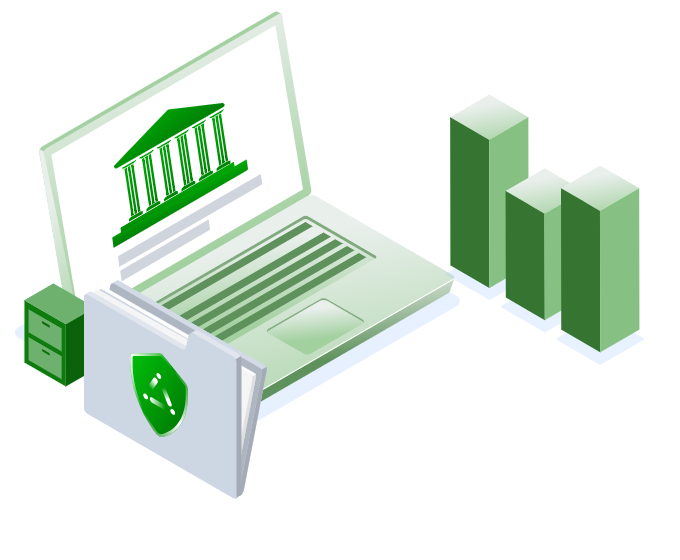
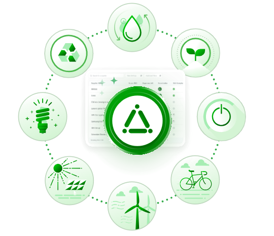
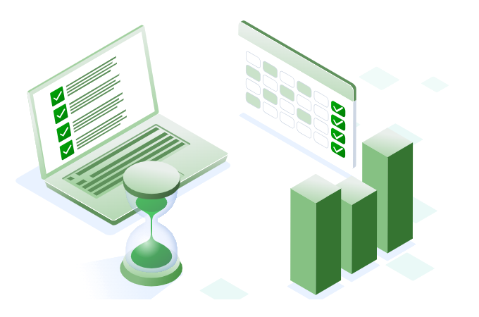

Government & Cities
Smart Sustainability for the Public Sector
Enable local governments, agencies, and city networks to manage ESG data, improve transparency, and align with national and global sustainability goals.
Request a demo
Key Features
- Track public building emissions, energy use, and waste diversion
- Visualize transportation, water, and infrastructure impact
- Align with SDGs, local climate targets, or EU Green Deal directives
- Create internal and citizen-facing sustainability dashboards
Ideal For
- Municipalities & city networks
- Utility authorities
- Government-owned facilities & infrastructure projects

Example KPIs
- GHG emissions per capita
- % renewable energy in city operations
- Public transport electrification rate
- Waste Management (diversion or recycling rate)
- Air & Water Quality
- Biodiversity Indexes

Triple I is Certified


Frequently Asked Questions
Yes. Each department or agency can feed data in independently while reporting rolls up to a single city-wide view.
CSRD, ESRS, GRI and the GHG Protocol are supported, alongside national and EU-specific obligations.
Every figure keeps its source, emission factor and calculation trail, which is what public audit requires.
Yes. Reports and dashboards can be generated for publication as well as for internal use.
No. The AI handles mapping, classification and framework alignment.
Don’t Know Where to Start?
Start Free Assessment